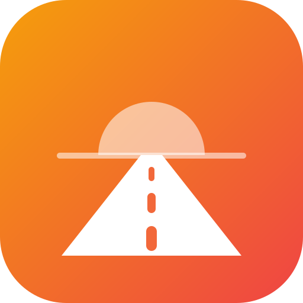

Har bir logo katta va telefon ekranidagi o'lchamlarda ko'rsatilgan
«Ochiq internet». Ochilgan qulf — bloklar ochiladi.
«Erkinlik». Qalqon ichida uchayotgan qush — himoya va erkinlik.
«Tez va yengil». Shamol chiziqlari — tezlik.

«Har doim yo'l bor». Ufqqa ketgan yo'l — to'siqsiz internet.